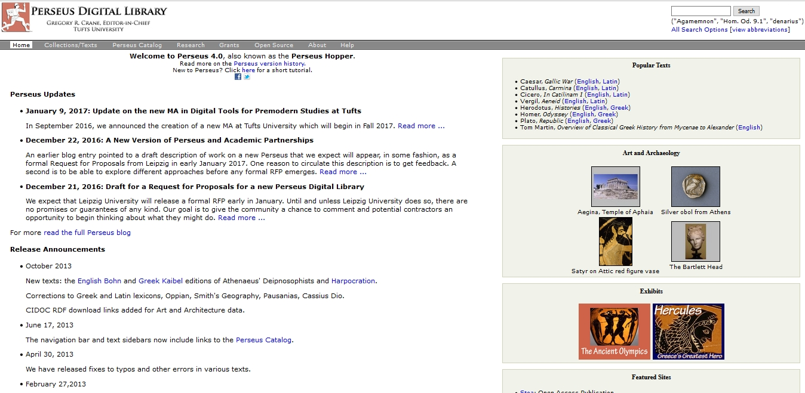
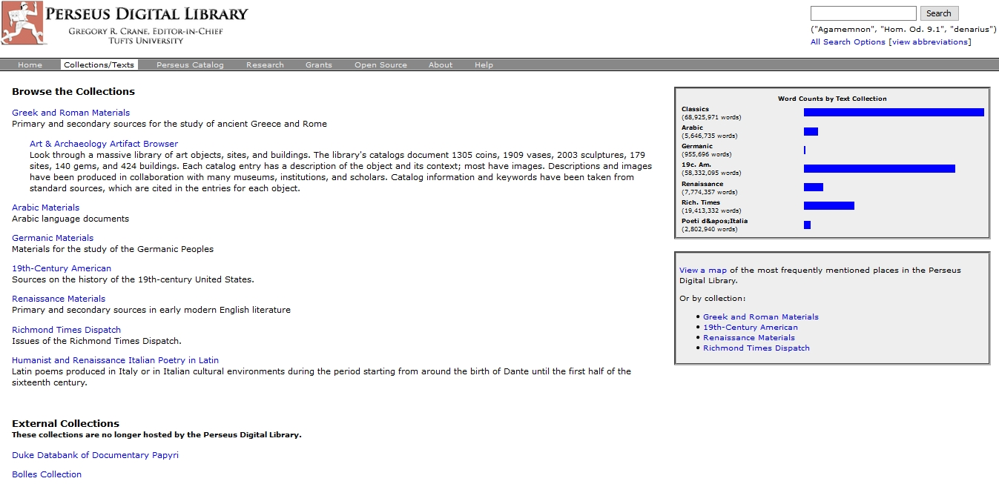
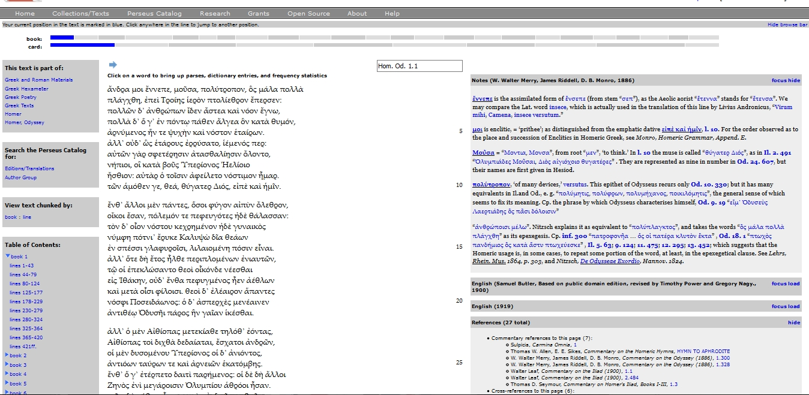
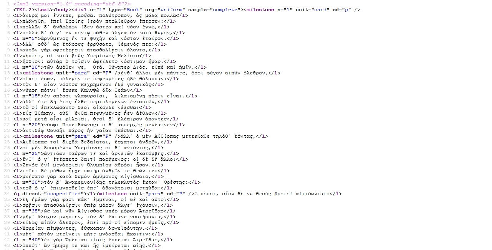
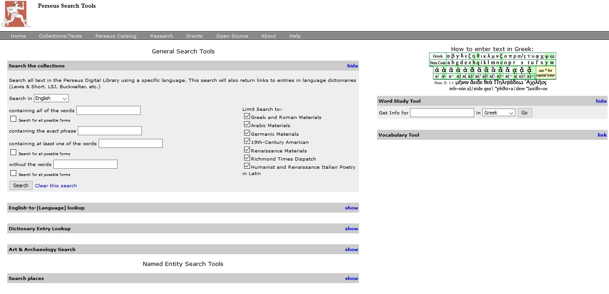
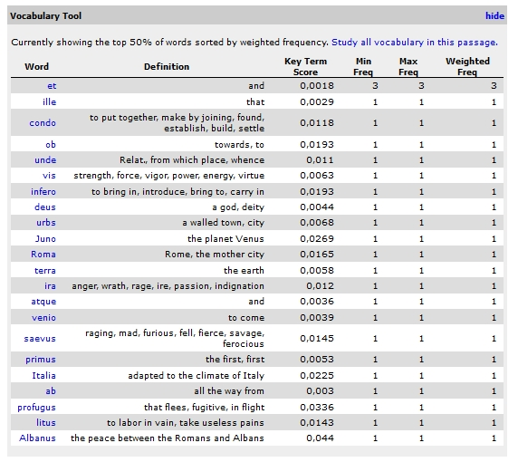

Review of Perseus Digital Library
Table of Contents
Abstract
Perseus Digital Library is a well-established Digital Humanities project providing a library of out-of-copyright editions of canonical world literature with a focus on the Classical languages while expanding its scope beyond its original field. Apart from being a text collection, Perseus also provides a plethora of tools for the analysis of its text material and builds upon a sound base of methodological grounding. The digital library is made up of one main collection (Greek and Roman materials) and several smaller sub-collections spanning a range of other subjects. Data acquisition is achieved semi-automatically. The contents of the library consist of out-of-print text editions, dictionaries and commentaries being enriched by the supply of digital tools for analysis. Perseus Digital Library is reviewed as a whole but a special focus of the review lies on the Greek and Roman sub-collection and sub-projects.
Introduction

Following in the footsteps of 3rd century BCE scholars at the library of Alexandria, the self-defined mission of Perseus is ‘to make the full record of humanity – linguistic sources, physical artifacts, historical spaces – as intellectually accessible as possible to every human being, regardless of linguistic or cultural background”.2 Perseus thus targets research-driven academic audiences just as much as the general public. Furthermore, its purpose is the promotion of Digital Humanities research as much as the democratization of cultural heritage through improved accessibility. Beside human readable information as provided throughout the various text collections, Perseus aims at creating a network of machine-actionable as well as machine-generated knowledge, as they state in their project description.

Responsibilities in the project are fairly transparent. Among others, Gregory Crane (Editor –in-Chief), Marie-Claire Beaulieu (Associate Editor), Bridget Almas (Software Developer), Alison Babeu (Digital Librarian) and collaborators from external institutions are mentioned. An extensive overview of past grants and projects documents the projects’ resources. Originally started at the Classics Department of Tufts University in 1985, Perseus of today features a great magnitude of cooperation partners and extended its scope way past the original field of Classics. The project has collected a number of science and government funds alike as well as private donations. Thus it was able to adopt a broader research agenda in 1998 (Digital Library Initiative Phase 2). Its goal was to create a digital library for the humanities as a whole which would enlarge the digital infrastructure with a mass of non-text materials and side-projects supplying Digital Humanities technologies. A plethora of child projects has sprouted from Perseus (such as the Perseus Catalog,3 the Perseids Project,4) and the project now starts to span the world with greater international cooperation and a second base at Leipzig University (Ancient Greek and Latin Dependency Treebank,5 Leipzig Open Fragmentary Texts Series,6 Open Greek and Latin Project,7 Open Persian 8). While every generation of Perseus texts followed a different paradigm of production, the fourth generation collections (beginning in 2006) now integrate not only transcribed texts and original page images but forms of deeper annotation and TEI-compliant mark-up. The catalogue aims for a standards-compliant library infrastructure and a Canonical Text Services Protocol (see section 3 on related projects) starts to provide new means of reference apart from the already supported conventional scholarly citations.9
Aims and Content
Aims

Perseus Editor-in-Chief Gregory Crane stresses that ‘access to the cultural heritage of humanity is a right, not a privilege” (Crane 2002, 626-63). The project does not want to continue restriction of academic resources to institutions paying expensive fees and thus feed information to a limited audience. Perseus Digital Library thus represents a democratization of cultural heritage which is being made accessible to everyone. Already in the early 2000s it disseminated its contents ‘far beyond traditional academia’ (Crane 2002, 626-63). Crane also points out the need for user customization of digital library contents for diverse audiences in general. A logistic problem with this is that the practical use of libraries as places for reading for the public can sometimes conflict with the internal needs of cataloguing and organizing the material (Crane 2002, 626-63). Perseus Digital Library is showing good efforts in both user-customization and advanced forms of internal organization.
Corpus Design and Representativeness of the Corpus
The purpose of Perseus is to make texts in the field of the Humanities available online in a very complete way. The criteria for text selection seem to be the popularity and the (canonical) status of the texts. It is not specified, however, whether works largely ignored to this day are going to follow, such as, for example, early modern Latin literature that has not been re-edited ever since its beginnings. Perseus so far provides texts which were edited in the 19th century and beyond and which are in circulation. Perseus does not represent a library of rare works, but rather of commonly found ones in specialized academic libraries. Seeing that the canonical versions of ancient texts, sectioned according to today’s accepted order were established mostly in the 20th century, it can sometimes be problematic that Perseus Digital Library uses old text versions from the late 19th century. While certain text versions have undergone thorough corrections and intense research since the late 19th century, others have stayed virtually the same since then. Also, the exact wording isn’t perceived as essential for every research purpose. In these cases, the 19th century version remains the current accepted version until now. In the case of these not frequently re-edited, less frequently read ones especially – which might for that reason be more difficult to acquire and less available for a potential non-academic user (such as Dionysius of Halicarnassus, for example) –, Perseus Digital Library is a very valuable tool. Perseus Digital Library’s selection criteria are the epoch and the representativeness of the texts in the sense of being part of canonical ‘world literature’.
If the goal of Perseus is to provide a complete Digital Library for the Humanities, they have of course not yet reached a high degree of completeness. Perseus Digital Library remains a work in progress and further development can be expected. Compared to other text collection projects,11 however, Perseus is an extraordinarily broad and ‘complete’ collection. In terms of representativeness, Perseus provides a good representative sample of Classical texts, which after all was the primary purpose of the now very much expanded collection. While being fairly representative of the Classical world, it has to be noted that the term ‘representative’ operates within the scope of the canonical Classical literature having been the focus of research until today. However, it is less balanced towards less frequently read works. Therefore the question of whether Perseus is a well-balanced text collection remains unsolved and depends largely on the definition of what is chosen as a point of reference for what we consider as the corpus of Classical language literature in the whole.
The texts Perseus offers outside its Classical collection cannot yet be considered representative or balanced within the ideological framework of a library for the Humanities in general. However, certain sub-collections are representative of their sub-fields,12 such as the 19th century American materials, the Richmond Times Dispatch and the Humanist and Renaissance Italian Poetry in Latin collection as their scopes are defined in a more narrow way. The Arabic collection contains only the Quran, the general Renaissance materials section contains 7 million words and well-known works but yet can be considered neither representative nor balanced nor complete. The Germanic collection though seems already fairly well developed considering the fact that this one is probably the globally least widely studied topic of the selection Perseus provides so far.
The Perseus collection is dynamic and growing, though the Classical literature part might be considered fairly complete.13 It has, however, to be stressed that the Perseus project already now offers three sub-collections that can claim relative completeness, balance and representativeness in a general sense. Perseus is very extensive and even very complete depending on the definition of completeness. It is rich in content, functionalities and sub-projects. It has reached sufficient maturity and consistency to serve as a base for further research and the integration of further sub-collections.
Usage scenarios
The Roman and Greek materials collection could be defined as a digital access to late 19th, early 20th century editions of Latin and Greek primary texts where each segment can be viewed in the context of its translations and dictionary entries. This provides a good base for studying the primary texts and probably the best one can possibly get without bigger copyright issues or more generally, for free. However, it has to be mentioned that the critical apparatus from the original editions is not contained in Perseus. Depending on the research interests in working with the material, the reused editions might not be sufficient in every case. From personal interviews, I received the feedback that scholars of ancient history see no problem whatsoever in citing Perseus texts in scientific publications, whereas Classics scholars with interest in literary texts insist that the provided editions are too old to be used in a philological publication, especially as the main portion of material deals with well-researched texts where there would be newer, more text critical editions available. For Classical philology, the Perseus Digital Library is a great study tool to be used in learning and teaching ancient languages but not of sufficient quality in order to do qualitative research on a certain text. An exception to this are the treebanks and linguistic features of course, although they provide a very specific type of research opportunity where they are immensely useful for quantitative research and the analysis of certain recurring grammatical structures. This is a very specialized branch of Classical philology where the Perseus project is a scientific pioneer but this cannot be said of Classics as a whole discipline.
Related projects
The Perseids side-project provides a platform for ‚collaborative editing, annotation, and publication of born-digital editions of source documents in the classics‘ coupling different tools and services, inspired among others by the Harvard Homer Multitext Project which has laid the foundations for the Canonical Text Services (CTS) protocol, of which the CTS URNs are a part (Berti et. al. 2014, 3; Smith 2009). The CTS is built upon FRBR metadata. It allows for the citation of single verses and serves as the link between Perseus Catalog and the TEI XML based textual content of the Perseus Digital Library.
The Leipzig Open Fragmentary Texts Series (LOFTS) is developed in conjunction with Perseus Digital Library. Texts from fragmentary Greek historians in the LOFTS project were obtained by OCR processing of scans of the Internet Archive.14 The error-prone Greek output was first corrected semi-automatically and completely rectified manually in the encoding process where the output was integrated in a Perseus Digital Library and Leipzig Open Greek and Latin (OGL) Project compatible EpiDoc template (Berti et. al. 2014, 14). The Perseus Library data are reused by other projects, though mostly in the associated ones briefly described in this review.
Research uses of Perseus span from first quantified studies of Greek grammar (Celano 2014, 97–110) and morphology via treebanking and the creation of extensive digital libraries in general. Further uses also include social networks for the characters of Greek tragedy (Rydberg-Cox 2011) and the implementation of historical and geospatial data (Smith & Crane 2001, 127–136).
Data model
 
All mark-up and annotations are created automatically which explains the not very rich mark-up in older generation texts, but shows impressive results in newer parts of the collection. A good example for this is the mark-up of historical names and places in the 19th century American materials section. Stable identifiers are available in the form of four different URIs (text, citation, work, catalog record) containing URNs. The choice to use a TEI-compliant SGML format was meant as a commitment to long-term usability. Ancient Greek is stored as beta code. Maybe Unicode would be a better option here. One regrettable fact regarding the XML representation is the lack of a TEI-header containing bibliographical information and metadata about the respective source. Although admittedly this information can be found in the Perseus Catalog, metadata and transcription of a source should be stored together in a single file.
The actual text presentation is segmented in books, chapters and sections – full text versions are not available due to copyright reasons. The segments however include notes, a bibliographic reference of the resource, display preferences, a vocabulary tool, translations, commentaries and different versions of the text. The segments are enhanced further, if available, with stable identifiers, a Creative Commons licence and a TEI XML version of varied quality.
User Interface
The text collection provides a user interface where segments of primary texts can be viewed side by side with their translations and commentaries (if available). Apart from that, the word study tool and thereby dictionary entries are accessible. Notes from the used edition are also represented. The Perseus text collection engages with its texts in various ways but texts are not associated with their material carriers – Perseus is in that respect a library following the digital paradigm as opposed to a digitized library focusing on facsimiles or text presentation of the base documents.
Works (original and related) can be found via the list of authors as well as the simple (metadata, not full text) search. Once one version of a text is found, one can comfortably switch to related versions or access commentaries and the like. The simple search does not always yield results straightaway – if for example the user does not enter the English naming conventions for ancient names and titles –, and so it can sometimes be difficult to find the text one was looking for. The ‘view abbreviations” link does help here though.
The help section features a Perseus 4 Quick Start Guide, information on copyright and reuse as well as an FAQ page last updated in May 2016. It also suggests starting points for the exploration of the platform as well as help with the texts, the vocabulary tool and Perseus search. With the lookup tool, Perseus provides a map to its own contents, enabling users to search topics they are interested in.
The user interface combines the view of the primary text with study tools such as translations, comments and the word study tools even if the project description stresses the fact that Perseus Digital Library focuses on their own Digital Humanities research over services for an audience. Perseus does not provide introductory texts but it provides old commentaries to primary sources. Further introductions of the Perseus editors to the text collection could, however, still improve the overall impression and usability of resource.

Navigating Perseus in its full complexity is not intuitive and does take some getting used to. This is partly due to the vastness and complexity of the collection but it still could be improved by a clearer layout. The visual patterns of Perseus also seem a bit old-fashioned and – while the project stresses the research focus over the presentation for the audience – it still is one of the biggest and best funded Digital Humanities projects out there and some more effort on the visual side would be desirable. While functional, the layout diminishes usability in parts, and especially the organization of the main navigation containing the ‘About” sections is very confusing. It seems redundant and is not intuitively logical. A user new to Perseus will have a very hard time finding orientation and will probably overlook good parts of the project trying to get to the desired content as fast as possible.
Perseus does not encourage accidental findings by browsing very much. The fact that one finds ‘news” from 2009 on the page for current research is a bit irritating, especially as the project is in fact still very active today. It has to be admitted though that the publications section is perfectly up-to-date and provides the newest research papers on and by Perseus. But as even the sections supposed to explain the project are a bit confusing and although one usually finds what one was looking for in the end, there definitely is room for improvement.
Provision and sustainability
XML documents can be downloaded for single text segments, automated downloading is not permitted. Perseus offers download packages for their public materials and does not allow automated downloading so as not to endanger restricted items, such as images under reuse from external rights holders that Perseus offers in the Artifact Browser. Every single text segment has its own Creative Commons rights information indicating the conditions of reuse. But not all texts contain this information and, wherever it is not available, XMLs aren’t for download either. There is no other way of (automated) downloading such as an API.15 But each text as well as bundles of text (sub-collections) can be downloaded.16
In terms of reliability and sustainability, the Perseus project is convincing by its long history and the resulting vast amount of experience. The fact that the project has now spread from its base at Tufts to a whole network of institutions vouches for more sustainability. The digital library is also mirrored by the University of Chicago.17 In terms of long-term preservation, a Fedora backend is supposed to facilitate data management and thus – according to Perseus’ self-description – provide the base for good long-term preservation.18
The Perseus Hopper (the current version, released in 2007) is available as Open Source Java code that has been built with extensibility in mind, but the site also states major restructuring work since 2016 that is supposed to result in a completely new version.19
Conclusion
Perseus Digital Library is a well-established Digital Humanities project providing a library of out-of-copyright editions of canonical world literature with a focus on the Classical languages. Furthermore, it is expanding its scope way beyond its original field of Classics. Perseus Digital Library has lots of goals just as impressive as they are noble and shows great productivity in achieving them, thus creating – step by step – a digital library of and for the Humanities as well as humanity as a whole.
Suggestions for improvement
The Vocabulary tool already provides great help in language education but it would be nice to have a more print-friendly output available for the results of the word count tool as to make use of it for vocabulary building. It might also be interesting to provide a print-friendly option that includes a chosen segment of text and its vocabulary list which could serve as an automated work sheet-generator in teaching. Knowing from personal experience that Perseus is already now established as an irreplaceable tool in teaching Classical languages, I think that this is a great functionality and field of use of the library and am happy to see that this aspect is already being extended in the Leipzig Open Greek and Latin Project.
Text selection criteria of such an important library do actively judge the texts it provides and de-value those not chosen for publication in this digital library of the Humanities. It has to be noted that so far Perseus is a collection of canonical world literature mostly and so reinforces the paradigm of a canonical world literature. Works which do not fall into this narrowly defined scope remain endangered as a work not re-edited is prone to getting lost over time. Perseus could and should make a step in the direction of active preservation of less read, ‘rare’ texts by making room in its selection criteria for works that might be considered less representative but which are in danger of being lost or forgotten. Adopting the archival practise of including random samples might be an approach worth considering.20 Still, I encourage the project to broaden its definition regarding the question what the cultural heritage of humankind is, what the responsibility of an influential project like Perseus Digital Library could be in that context, and to reflect on whether they really want to ‘write the history of the winners’ only.
Synopsis
The amount of material already available in Perseus Digital Library is vast; sub-collections can claim relative completeness and representativeness. Apart from the textual material made available, Perseus excels in its initiatives to provide tools for deep analysis of these texts. The project can already now look back on 30 years of experience and a wealth of ground-breaking achievements and publications in the promotion and theoretical grounding of Digital Libraries for the Humanities. Perseus remains one of the most interesting projects in the Digital Humanities and has been so for a long time. The project has had a great methodological impact on the discussion of best practises for the Digital Humanities and has been a pioneer of the field.
To sum it all up: Perseus Digital Library is a big and important Digital Humanities text collection project with lots of methodological background research, a good choice of texts available, and provides a very well-known and established online resource for learners and academics alike. The project involves a plethora of very interesting functionalities and data. Perseus already now is a most powerful tool and any further development is highly anticipated.
Bibliography
- Berti, Monica, Bridget Almas, David Dubin, Greta Franzini, Simona Stoyanova and Gregory R. Crane. 2014. “The Linked Fragment: TEI and the Encoding of Text Reuses of Lost Authors”. Selected Papers from the 2013 TEI Conference, Journal of the Text Encoding Initiative 8.
- Celano, Giuseppe G. A.. 2014. “A computational study on preverbal and postverbal accusative object nouns and pronouns in Ancient Greek”. The Prague Bulletin of Mathematical Linguistics 101: 97–110.
- Crane, Gregory. 2002. “Cultural Heritage Digital Libraries: Needs and Components”. Proceedings of the 6th European Conference on Research and Advanced Technology for Digital Libraries. London: 626-63. http://www.perseus.tufts.edu/~ababeu/ecdl2002.pdf.
- Crane, Gregory (ed.). 1985—2017. Perseus Digital Library, https://web.archive.org/web/20171210180948/http://www.perseus.tufts.edu/hopper/.
- Rydberg-Cox, Jeff. 2011. “Social Networks and the Language of Greek Tragedy”. Journal of the Chicago Colloquium on Digital Humanities and Computer Science 1/3.
- Smith, David A. and Gregory Crane. 2011. “Disambiguating Geographic Names in a Historical Digital Library?” Proceedings of the 5th European Conference on Research and Advanced Technology for Digital Libraries, September 04–09. London: 127–136.
- Smith, Neel. 2009. “Citation in Classical Studies”. Changing the Center of Gravity: Transforming Classical Studies Through Cyberinfrastructure 3/1. Accessed 02.10.2017. https://web.archive.org/save/http://www.digitalhumanities.org/dhq/vol/3/1/000028/000028.html.
Notes
- To be found at: http://www.perseus.tufts.edu/hopper/, archived link: https://web.archive.org/web/20171210180948/http://www.perseus.tufts.edu/hopper/. ↑
- See https://web.archive.org/web/20171210181632/http://www.perseus.tufts.edu/hopper/research. ↑
- https://web.archive.org/web/20171210181722/http://catalog.perseus.org/. ↑
- https://web.archive.org/web/20171210181806/http://sites.tufts.edu/perseids/. ↑
- https://perseusdl.github.io/treebank_data/ [Accessed 02.10.2017]. ↑
- https://web.archive.org/web/20171210182005/http://www.dh.uni-leipzig.de/wo/lofts/. ↑
- https://web.archive.org/web/20171210182145/http://www.dh.uni-leipzig.de/wo/projects/open-greek-and-latin-project/. ↑
- https://web.archive.org/web/20171210182305/http://www.dh.uni-leipzig.de/wo/open-philology-project/open-persian/. ↑
- See https://web.archive.org/web/20171210182441/http://www.perseus.tufts.edu/hopper/research/current , https://web.archive.org/web/20171210182638/http://www.perseus.tufts.edu/hopper/research/background. ↑
- https://web.archive.org/web/20171210182638/http://www.perseus.tufts.edu/hopper/research/background. ↑
- See other projects reviewed in the RIDE digital text collection issue. ↑
- As far as the author of this review is qualified to judge. The Digital Library however does not explain how they understand completeness and what degree of representativeness they want to reach in the end. ↑
- Even though it lacks certain works of even Aristotle and Plato, probably no other similar text collection can claim Perseus‘ degree of completeness and representativeness. ↑
- https://archive.org/ [Accessed 02.10.2017]. ↑
- https://web.archive.org/web/20171210184220/http://www.perseus.tufts.edu/hopper/help/faq. ↑
- https://web.archive.org/web/20171210184603/http://www.perseus.tufts.edu/hopper/opensource/download. ↑
- To be found at: https://web.archive.org/web/20171210184634/http://perseus.uchicago.edu/. ↑
- https://web.archive.org/web/20171210184755/http://www.perseus.tufts.edu/hopper/research/current. ↑
- https://web.archive.org/web/20171210184809/http://www.perseus.tufts.edu/hopper/opensource. ↑
- This sample could, for example, be taken from the libraries and institutions providing the base (text) material. ↑
@article{perseus,
author = {Lang, Sarah},
title = {Review of Perseus Digital Library},
journal = {RIDE – A review journal for digital editions and resources},
number = {8},
year = {2018},
doi = {10.18716/ride.a.8.3},
url = {https://doi.org/10.18716/ride.a.8.3},
}TY - JOUR
AU - Lang, Sarah
TI - Review of Perseus Digital Library
T2 - RIDE – A review journal for digital editions and resources
IS - 8
PY - 2018
DA - 2018/02
DO - 10.18716/ride.a.8.3
UR - https://doi.org/10.18716/ride.a.8.3
PB - Institut für Dokumentologie und Editorik e. V.
LA - en
ER - Lang, S. (2018). Review of Perseus Digital Library. RIDE – A review journal for digital editions and resources, (8). https://doi.org/10.18716/ride.a.8.3Lang, Sarah. "Review of Perseus Digital Library." RIDE – A review journal for digital editions and resources, no. 8, 2018. https://doi.org/10.18716/ride.a.8.3.Lang, Sarah. "Review of Perseus Digital Library." RIDE – A review journal for digital editions and resources, no. 8 (2018). https://doi.org/10.18716/ride.a.8.3.